Nextflow DSL1
1 Documentations
https://www.nextflow.io/docs/latest/index.html
https://nextflow-io.github.io/nf-hack18/training.html
https://nextflow-io.github.io/patterns/index.html#_basic_patterns
2 Acronyms
| DAG | Directed Acyclic Graph |
| DSL | Domain Specific Language. See https://en.wikipedia.org/wiki/Domain-specific_language |
| DSL2 | Version 2 of Nextflow. See https://www.nextflow.io/blog/2020/dsl2-is-here.html |
| nf | nextflow |
3 Very important to understand how nextflow works
3.1 Names of the files
The nextflow pipeline file are named by default main.nf.
The nextflow config file must are named by default nextflow.config.
It is possible to modify these two names. But it will not work if the idea is to work from a distant repository (see section Precision when running a distant nextflow file).
3.2 work folders
Nextflow create a folder for each process of the .nf file (or each parallelization of each process) in the work directory. For instance 00/5bf63033e13094f180fe69c583ce3c. Then, everything of the process is perform in this folder, which becomes the working environment (a kind of home). If INPUT is present, then files or values are imported. For the files, a symbolic link is created pointing to the initial file (in another folder of the work directory, or in a dataset folder). All the new files are created here. If publishDir is used, then the files referenced in OUTPUT are copy/paste into the designed publishDir folder.
Execution files are also hosted here. Example in the work folder work/1c/8b95199cc174e6590288faf07f3658:
.command.err : Content of STDERR
.command.log : Log File (STDOUT+STDERR)
.command.out : Content of STDOUT
.command.run : Nextflow generated commands to run the script (cloud, etc.)
.command.sh : Script of the task (“script:“ in process definition)
.command.trace : Memory/CPU/Disk footprint of the task
.exitcode : Exit status of the task
3.3 symbolic links
Warning, because of the symbolic links, every imported file that is modified by the process is not only modified in the work folder but also were the link point, meaning that initial input data can be modifed !
To prevent that :
1) always use input files that are "write" protected (read and execute only).
2) Copy the input file in the process before working:
input:
file fs
script:
"""
cp ${fs} tempo.txt
chmod 777 tempo.txt
...See also section Very important to understand for a better example of copy.
3.4 The resume option
A strong advantage of nextflow is to rerun the pipeline using the
-resume option of the run command. In such
case, all the processes that are cache 'true' are not run
but linked to the previous same process execution, which save lots of
time !
However, all the variables of the .config used in the process must be
declared in the input section of the process. Otherwise, nextflow will
not rerun a cache 'true' process using a variable modified
in the .config file.
3.5 Variable declaration in processes
The scope of a process is such that if a variable is not in the input
section, it looks for variables in the working environment of nextflow,
which has notably sourced the env{} environment of the
config file. Thus, it is not mandatory to use the input section to
declare variables. However, in that case, nextflow will not rerun
a cache 'true' process using a variable modified in the
.config file.
4 nexflow usage
4.1 DSL1 and DSL2
Always start a .nf script by:
nextflow.enable.dsl=2With value 1 or 2 depending on the desired DSL.
4.2 Commands
| clean | Clean up project cache and work directories |
| clone | Clone a project into a folder |
| config | Print a project configuration |
| console | Launch Nextflow interactive console |
| drop | Delete the local copy of a project |
| help | Print the usage help for a command |
| info | Print project and system runtime information |
| kuberun | Execute a workflow in a Kubernetes cluster (experimental) |
| list | List all downloaded projects |
| log | Print executions log and runtime info |
| pull | Download or update a project |
| run | Execute a pipeline project |
| self-update | Update nextflow runtime to the latest available version |
| view | View project script file(s) |
Example:
nextflow run main.nf4.3 Main options
| -C | Use the specified configuration file(s) overriding any defaults |
| -D | Set JVM properties |
| -bg | Execute nextflow in background |
| -c, -config | Add the specified file to configuration set |
| -d, -dockerize | Launch nextflow via Docker (experimental) |
| -h | Print this help |
| -log | Set nextflow log file path |
| -q, -quiet | Do not print information messages |
| -syslog | Send logs to syslog server (eg. localhost:514) |
| -v, -version | Print the program version |
Example:
nextflow -v4.4 Main run options
| -cache | Enable/disable processes caching | |
| -h, -help | Print the command usage | Default: false |
| -main-script | The script file to be executed when launching a project directory or repository | |
| -name | Assign a mnemonic name to the a pipeline run | |
| -resume | Execute the script using the cached results, useful to continue executions that was stopped by an error. Warning: s soon as a cache = false in a process, all the process that uses a channel from this process will be re-executed. Thus, if the first process is cache = false and that it channels toward the second process, then every process would be re-executed | |
| -r, -revision | Revision of the project to run (either a git branch, tag or commit SHA | number) |
| -test | Test a script function with the name specified | |
| -N, -with-notification | Send a notification email on workflow completion to the specified | recipients |
| -with-weblog | Send workflow status messages via HTTP to target URL | |
| -w, -work-dir | Directory where intermediate result files are stored |
Example:
nextflow run main.nf -resume5 Installation
https://www.nextflow.io/docs/latest/getstarted.html#requirements
The best is to install in our home/bin/ the nextflow software and dependencies (java and singularity).
5.1 Local Linux kernel
5.1.1 Linux and WSL2
Java install: see protocol 165.
Nextflow install:
sudo chmod 777 /usr/local/bin
cd /usr/local/bin
sudo curl -s https://get.nextflow.io | bashOf note, this is specified but Fred Lemoine confirmed that does not work:
wget -qO- https://github.com/nextflow-io/nextflow/releases/download/v21.04.1/nextflow-21.04.1-allHowever, this works:
wget -qO nextflow https://github.com/nextflow-io/nextflow/releases/download/v21.04.1/nextflowOr:
curl -s https://get.nextflow.io | bash -s -- -v 20.10.0 # replace 20.10.0 by the desired versionThen, update the .bashrc if this path is not already present
export PATH="/usr/local/bin:$PATH" # for nextflow5.1.2 MacOS
Java install: see protocol 165.
Then check if wget is present, otherwise:
sudo port install wgetThen:
wget -qO- https://get.nextflow.io | bash
# Weirdly, nextflow command is installed in the Users directory. Thus, check that install is correct:
cd /Users/username/
nextflow # should display options. If not:
echo $PATH
export PATH="/Users/username:$PATH"
echo $PATH
nextflow # should display optionsIf it does not work, notably because of Java, then test:
brew install nextflowApptainer has to be installed. See protocol 135.
5.2 Cluster
Connect to sonic.
Then
cd $ZEUSHOME
cd bin
module load java
curl -s https://get.nextflow.io | bashOf note, this is specified but Fred Lemoine confirmed that does not work:
wget -qO- https://github.com/nextflow-io/nextflow/releases/download/v21.04.1/nextflow-21.04.1-allThen, update the for_sonic.profile and for_sonic.bashrc
export PATH="/pasteur/zeus/projets/p01/BioIT/gmillot/bin:$PATH" # for nextflow
alias nextflow="module load java/13.0.2 ; nextflow"5.3 Old version / previous release
5.3.1 classic way
Java install: see protocol 165.
Then:
wget -qO nextflow https://github.com/nextflow-io/nextflow/releases/download/v20.10.0/nextflow
sudo mv nextflow /usr/local/bin/nextflow5.3.2 sdk management
Java install: see protocol 165.
Install SDKMAN if you haven't installed it yet.
curl -s "https://get.sdkman.io" | bash
source "$HOME/.sdkman/bin/sdkman-init.sh"Install the versions of Nextflow you want. For instance, if you want to install Nextflow 20.10.0 and 21.04.0, you would run the following commands:
sdk install nextflow 20.10.06 update
nextflow -self-updateUpdate the version where it is already installed
7 Basic description
See https://www.nextflow.io/docs/latest/process.html?highlight=tuple
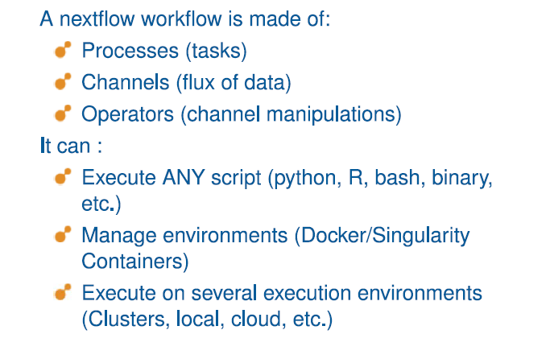
Nextflow is a DSL (see section Acronyms).
Comarison with other workflow managers:
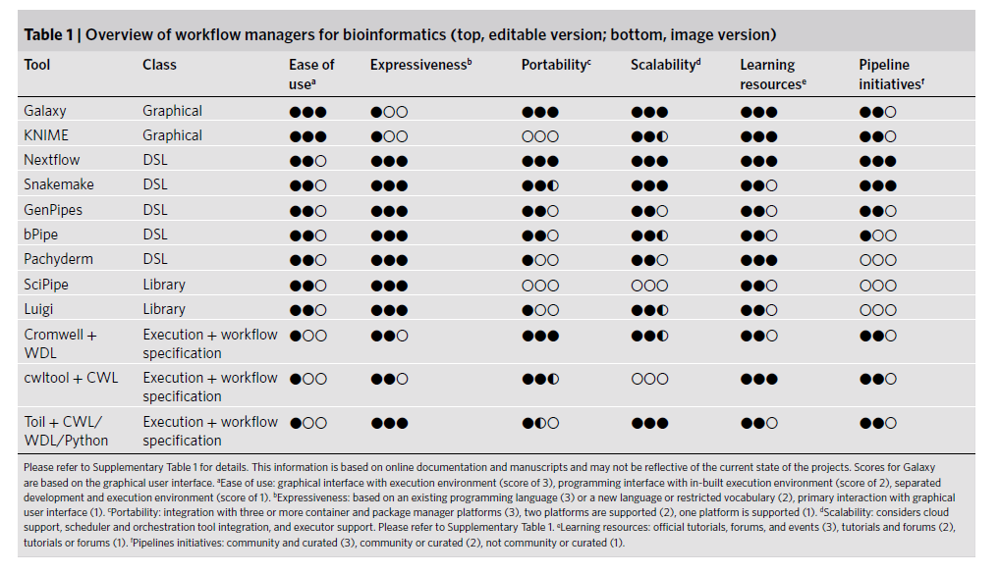
https://www.nature.com/articles/s41592-021-01254-9
Nextflow uses the Groovy language
https://www.nextflow.io/docs/latest/script.html#language-basics
https://groovy-lang.org/syntax.html
https://www.tutorialspoint.com/groovy/index.htm
Regex:
https://www.nextflow.io/docs/latest/script.html#regular-expressions
https://web.archive.org/web/20170621185113/http://naleid.com/blog/2008/05/19/dont-fear-the-regexp/
https://docs.oracle.com/javase/tutorial/essential/io/fileOps.html#glob
https://docs.oracle.com/javase/7/docs/api/java/util/regex/Pattern.html
8 Console
Very useful to test groovy code.
On the cluster:
module load java
nextflow consoleWeb console:
http://groovyconsole.appspot.com/edit/34004
9 Main groovy commands
x.first() |
If parallelization due to another channel in the same input section, specify that the x channel has to be used each time |
x.name |
take the name of the variable x. To assign the name, use
val(x.name) into y |
${x} |
value of the variable x, defined at the beginning of the file |
// |
comment |
channel. |
function that defines a channel. Must be followed by another function (see below) |
channel.from(1,2) |
channel for the value 1 and 2 |
Channel.fromPath("x") |
define a channel from the path x. Warning: a channel can be called only once, contrary to variables |
Channel.fromFilePairs("x") |
take as argument a pathway of two files. If several couples of files, regular expressions are used. The result is a tuple |
file() |
define a path variable. For instance file("x") defines
the path x as a variable, that can be used several times in a nextflow
script if defined at the beginning of a nf script |
x.first() |
take the first element of channel x |
x.collectFile() |
collect all the files of channel x, means that it waits for the end
of the parallelization of the process using the output channel x.
Warning: see section weird
behavior of collectFile(). Optional:
x.collectFile(name:"all_consensus.fasta", skip: 1, keepHeader: true) |
x.collect()
x.mix(y, z)x.flatten() |
split a list of file inside a single channel x into several channels with one file per channel |
publishDir "x/", mode: 'copy' |
copy the output files defined in the output section into the x
folder. The , mode: 'copy' precises that we do not want a
symbolic file into the x folder pointing to the work folder (default)
but that we want a real copy. This avoid to break symbolic links if the
wok folder is removed for instance |
tuple |
create a channel containing several info (like a list). Example:
tuple val(name), file(f1), file(f2) from data |
val(y) from x |
recover a value from x and assign to y. Can be an integer, character, etc. |
file(y) from x |
recover a file from x and assign to y. In input:
section |
10 Script start
Every nexflow script start by at least one channel or one variable that must be defined.
10.1 Channel
Channels are not mandatory. The advantage to use a channel is 1) to have several files in it and 2) to perform parallelization.
10.1.1 Basic
Example:
num = Channel.from( 1, 2, 3 )num takes the values 1, 2, 3.
Example:
file1 = Channel.fromPath("fasta/nCov_ampliseq_up.fasta")Here file1 is a channel variable. It can be used only in a single process
Example:
data = Channel.fromFilePairs('fastq_files/*_{1,2}.fq.gz', flat:true)Take all the files corresponding to *, then take 1 and 2
to form a couple of files. Thus if * corresponds to 8
names, 8 couples are formed. The data channel is an object
a bit like a list, made of 8 compartments, one for each file name, each
compartment having 3 values: a name (corresponding to *),
and two file names (corresponding to *_1.fq.gz and
*_2.fq.gz). The calling of this channel in a process could
be something like:
input:
tuple val(x), file(x1), file(x2) from dataTo create several initial channel from the same parameter:
Channel.fromPath("fasta/nCov_ampliseq_up.fasta", checkIfExists: false).into{fs_ch1; fs_ch2}Warning: the into operator should be used to connect two
or more target channels and checkIfExists is to check if the file exists
(option not valid for value for instance).
To print the content of a channel:
tempo_ch.view { "tempo_ch: $it" } // tempo_ch is the name of the channel. The implicit variable "it" means iteration as it takes all the values from 1 to ... it will successively take the values 1, 2, and 3 as iterations go. To complete the answer a bit: any closure {} has the the implicit variable "it". {x->} has no implicit "it" variable, but an explicit "x". {->} has not implicit "it" variable and no explicit variable10.1.2 Queue and value channels
See https://www.nextflow.io/docs/latest/channel.html#channel-types
Queue channel : single use
A queue channel is a non-blocking unidirectional FIFO queue which connects two processes or operators.
A queue channel is usually created using a factory method such as a from, fromPath, etc. or chaining it with a channel operator such as map, flatMap, etc.
Queue channels are also created by process output declarations using the into clause.
The definition implies that the same queue channel cannot be used more than one time as process output and more than one time as process input.
If you need to connect a process output channel to more than one process or operator use the into operator to create two (or more) copies of the same channel and use each of them to connect a separate process.
Value channel : multiple use
A value channel a.k.a. singleton channel by definition is bound to a single value and it can be read unlimited times without consuming its content.
For this reason a value channel can be used as input by more than one process.
A value channel is created using the value factory method or by operators returning a single value, such as first, last, collect, count, min, max, reduce, sum. Thus, a channel recovering a value via stdout will not be considered as value channel.
A value channel is implicitly created by a process when an input specifies a simple value in the from clause. Moreover, a value channel is also implicitly created as output for a process whose inputs are only value channels.
10.2 Data objects
See http://groovy-lang.org/groovy-dev-kit.html#_data_and_objects
See section Variable scope for the scope of the variables in nextflow.
10.2.1 Vectors (Variable)
Variables are mostly vectors of one element. Example:
x = 1
println x
x = new java.util.Date()
println x
x = -3.1499392
println x
x = false
println x
x = "Hi"
println xVariable can also be defined in processes or in the nextflow script:
y = 2
process foo {
script:
x = 1
"""
echo $x $y
"""
}See section Variable scope for the scope of the variables.
10.2.2 Range
See http://groovy-lang.org/groovy-dev-kit.html#Collections-Ranges
A range is like a Python xrange type, i.e., a range of integers. See https://fr.wikiversity.org/wiki/Python/Les_types_de_base
Example:
def range = 5..8 // range is a name not a function. Def is not mandatory
assert range.size() == 4
assert range.get(2) == 7
assert range[2] == 710.2.3 List
See http://groovy-lang.org/groovy-dev-kit.html#Collections-Lists
A list is like a Python list type, i.e., an ordered collection of elements, but it seems that in groovy, they are of same mode. See https://fr.wikiversity.org/wiki/Python/Les_types_de_base
Example:
def list = [5, 6, 7, 8] // list is a name not a function. Def is not mandatory
assert list.get(2) == 7
assert list[2] == 7
assert list instanceof java.util.List
def emptyList = []
assert emptyList.size() == 0
emptyList.add(5)
assert emptyList.size() == 110.2.4 Map
See http://groovy-lang.org/groovy-dev-kit.html#Collections-Maps
A map is like Python dictionnary type, i.e., an unordered collection of objects. See https://fr.wikiversity.org/wiki/Python/Les_types_de_base
Example:
def map = [name: 'Gromit', likes: 'cheese', id: 1234]
assert map.get('name') == 'Gromit'
assert map.get('id') == 1234
assert map['name'] == 'Gromit'
assert map['id'] == 1234
assert map instanceof java.util.Map
def emptyMap = [:]
assert emptyMap.size() == 0
emptyMap.put("foo", 5)
assert emptyMap.size() == 1
assert emptyMap.get("foo") == 510.2.5 Tuple
See https://www.nextflow.io/docs/latest/process.html#output-tuple-of-values
A tuple is like Python tuple type, i.e., an unordered collection of objects. See https://fr.wikiversity.org/wiki/Python/Les_types_de_base
The tuple qualifier allows you to send multiple values into a single channel. This feature is useful when you need to group together the results of multiple executions of the same process, as shown in the following example:
query_ch = Channel.fromPath '*.fa'
species_ch = Channel.from 'human', 'cow', 'horse'
process blast {
input:
val query from query_ch
file species from species_ch
output:
tuple val(species), file('result') into blastOuts
script:
"""
blast -db nr -query $query > result
"""
}In the above example a BLAST task is executed for each pair of species and query that are received. When the task completes a new tuple containing the value for species and the file result is sent to the blastOuts channel.
10.2.6 File reading
See http://groovy-lang.org/groovy-dev-kit.html#_reading_files
https://www.nextflow.io/docs/latest/script.html#basic-read-write
https://www.nextflow.io/docs/latest/script.html#read-a-file-line-by-line
Warning:
file1 = file("fasta/nCov_ampliseq_up.fasta")Does not create a file if does not exists, nor read a file, file() create a path object than can then be used to manipulate the path.
10.3 Implicit (reserved) variables
https://www.nextflow.io/docs/latest/script.html#implicit-variables
Very important variables:
launchDir |
The directory where the workflow is run (requires version 20.04.0 or later). |
projectDir |
The directory where the main .nf script is located (requires version
20.04.0 or later). Warning: baseDir is deprecated |
workDir |
The directory where tasks temporary files are created. See |
Dictionary like implicit variables (cannot be easily printed):
params |
Dictionary like object holding workflow parameters specifing in the config file or as command line options. |
workflow |
Dictionary like object representing workflow information (see See also https://www.nextflow.io/docs/latest/metadata.html#workflow-introspection). |
nextflow |
Dictionary like object representing nextflow runtime information (see Nextflow metadata). |
Other variables:
moduleDir The directory where a module script is located
for DSL2 modules or the same as projectDir for a non-module script
(requires version 20.04.0 or later).
To use one of this variable:
config_file = workflow.configFiles[0] // to get the config file (as a file, not a path string)
out_path_ini = "$baseDir/results"To print one of this variable:
print("\n\nINITIATION TIME: ${workflow.start}")See also section Run metadata.
10.4 Options of nextflow run (params)
Pipeline parameters are simply declared by prepending to a variable name the prefix params, separated by dot character. Their value can be specified on the command line by prefixing the parameter name with a double dash character, i.e. --paramName. As an example, here is what should be written in the main.nf file:
params.str = 'Hello world!'Which is used like this:
nextflow run tutorial.nf --str 'Bonjour le monde'The string specified on the command line will override the default value of the parameter.
As of version 20.11.0-edge any . (dot) character in a parameter name is interpreted as the delimiter or nested scope e.g. --foo.bar Hello will be accessible from the script as params.foo.bar. If you want to have a parameter name including a . (dot) character escape it using the back-slash character e.g. --foo\.bar Hello
the variable can be used as it is in the nextflow script:
${params.str}Or reassigned in a more easy readable variable:
str=params.str11 Process
11.1 Description
A process is a section of a nf script that processes channels or variables. The definition is:
process <name> {
}Between the brackets is what is called the body of the process.
The minimal structure is:
process <NAME> {
<user script of the required task>
}But it is better to name the execution block using script, shell or exec:
process <NAME> {
[script | shell | exec]:
<user script of the required task>
}Can start with directives as publishDir.
And then is made of blocks, like:
input: |
input |
output: |
output |
when: |
when execute the task |
script | shell | exec: |
task to execute |
If the channel has several values, the process is parallelized.
Full structure :
process < name > { [ directives ]
input:
< process inputs >
output:
< process outputs >
when :
< condition >
[ script| shell| exec ]:
< user script to be executed >
}
11.2 Variable scope
Nextflow first check if the variable is present 1) in the script of the execution block of a process, 2) in the execution block of a process, but before the script, 3) in the channel, then in the nextflow script, and then in the system ($PATH for instance).
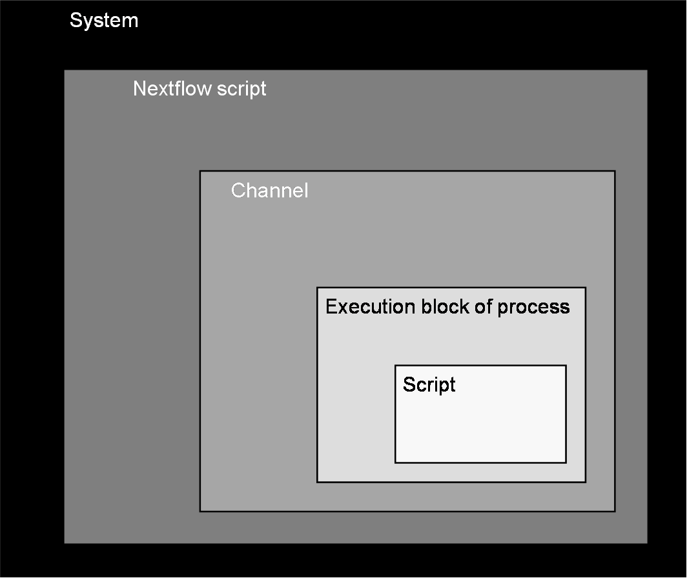
Single quotes in the execution block scoops the scope and goes directly into the system environment if the variable is not defined between the quotes. See https://www.nextflow.io/docs/latest/process.html#script.
Example: copy-paste the following code into the file /mnt/c/Users/Gael/Desktop/caca.nf
x=4
process A {
x=3 # variable cannot be defined inside process but outside of the execution block
output:
"res.txt"
script:
x=2
"""
x=1
echo "Result is:" \$x > res.txt # if $x is used, it is replaced during the writting into the work/.../.command.sh file before execution of this file
"""
}And execute:
nextflow run caca.nfCheck the result in work/.../res.txt
Then, play with inactivation and \$x to see the scope:
# x=1
echo "Result is:" \$x > res.txt-> Error: because the .command.sh has no variable x
defined.
echo "Result is:" $x > res.txtWith no inactivation, the replacement of $x is performed before the
writing of .command.sh, and the result is 2.
//x=2
echo "Result is:" $x > res.txtWith //x=2, the replacement of $x is performed before
the writing of .command.sh, and the result is 4, because a
ariable cannot be defined inside process but outside of the execution
block.
//x=4
//x=2
echo "Result is:" $x > res.txt-> Error: because during the .command.sh writing, no
variable x is defined, and the fact to use:
x=5
nextflow run caca.nfDoes not work either.
Now using single quotes:
'''
x=1
echo "Result is:" $x > res.txt
'''The result is 1.
'''
# x=1
echo "Result is:" $x > res.txt
'''-> Error: because during the .command.sh writing, the
scope is impaired by the single quotes.
'''
# x=1
echo "Result is:" $PATH > res.txt
'''The $PATH system variable is returned.
11.3 Very important to understand
When a process is run, a working directory is created (inside the
general working directory known thanks to the workDir
implicit variable) and all the files declared in the input
block are added into this directory thanks to symbolic links. For
instance, when the process configBackup in
C:\Users\gael\Documents\Git_projects\project_a\main.nf is
run (see section Backup
the nextflow.config file into the result folder):
config_file = workflow.configFiles[0] // better to use this than config_file = file("${projectDir}/ig_clustering.config") because the latter is not good if -c option of nextflow run is used
result_folder_name="20210903_res_project_a"
out_path="/mnt/c/Users/Gael/Desktop"
out_path="${out_path}/${result_folder_name}"
process configBackup {
publishDir "${out_path}", mode: 'copy', overwrite: false
input:
file config_file
output:
file "${config_file}" // warning message if we use file config_file
script: // mandatory block
"""
"""
}The directory work\b0\2f59852ea304ebe335edfdf3fd9d68 is created and
the file config_file (which is by default
"${projectDir}/nextflow.config" except if -c option of
nextflow run is used) is, added, using a symbolic link (warning: not
seen through Windows OS windows):
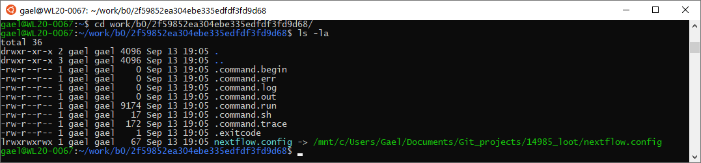
Now if:
1) publishDir "${out_path}" is used at the beginning of
the process
2) a file is present in the input block
3) and also present in the output block
Then, the file is copied into the publishDir folder
using a symbolic link (warning: not seen through Windows OS
windows):
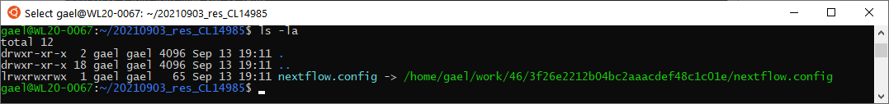
Now if in (1) publishDir "${out_path}", mode: 'copy' is
used at the beginning of the process, then the file is copied hard into
the publishDir folder:
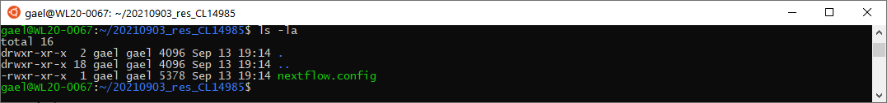
Now if in (1)
publishDir "${out_path}", mode: 'copy' overwrite: false is
used at the beginning of the process, then the file is copied into the
publishDir folder according to the mode, but only if the
file is not already in the publishDir folder, whatever the
form.
If an input file is modified in a process, we could imagine than only the file present in the work directory is modified. But due to the symbolic link, the initial file will be also modified. To prevent this:
- NEVER modify a file using the same name. always change the mane of the modified file.
- ALWAYS copy these files in the process that modifies the file, not in another process (to optimize the -resume option of nextflow run).
11.4 Directives
https://www.nextflow.io/docs/latest/process.html#directives
publishDir |
where to publish the output files. Example:
publishDir "${results}/", mode: 'copy' |
cache |
store the process results to a local cache. When the cache is
enabled and the pipeline is launched with the -resume option, any
following attempt to execute the process, along with the same inputs,
will cause the process execution to be skipped, producing the stored
data as the actual results. Example: cache 'false'. The
'deep' or 'lenient' value can be used instead
of 'true' or 'false'. See https://www.nextflow.io/docs/latest/process.html?highlight=deep#cache |
executor |
where processes are executed. By default a process uses the executor
defined globally in the nextflow.config file. Example:
executor 'local' |
tag |
associate each process execution with a custom label, so that it
will be easier to identify them in the log file or in the trace
execution report. Example: tag "${name}" |
label |
connect the current process with the withLabel: . Example:
label 'bwa' |
11.4.1 publishDir
See https://www.nextflow.io/docs/latest/process.html#publishdir.
The publishDir directive copies output files of the
output block into a folder. Example:
publishDir path: "/mnt/c/Users/Gael/Desktop/", mode: 'copy', overwrite: false
output:
file "aligned.gz" into tempo_chThe aligned.gz file is sent into the tempo_ch channel but is also
copied into the /mnt/c/Users/Gael/Desktop/ folder thanks to
the publishDir directive.
To get several output in folders (not into channels), use publishDir:
publishDir path: "${results}/08_POS_QC", mode: 'link', pattern: 'out_*/*' // for the output result of pos_qc into 08_POS_QC
publishDir path: "${results}/", mode: 'link', pattern: 'Full_Results.tsv' // for the copy of Full_Results.tsv from 08_POS_QC into ${results}/
output:
file "out_${vocqcfilename}*/*"// for the output result of voc_qc into 08_POS_QC
file "Full_Results.tsv" // for the copy of Full_Results.tsv from 08_POS_QC into ${results}/Parameters
mode |
The file publishing method. See the following table for possible values. |
overwrite |
When true any existing file in the specified folder will be overridden (default: true during normal pipeline execution and false when pipeline execution is resumed). |
pattern |
Specifies a glob file pattern that selects which files to publish from the overall set of output files. See https://docs.oracle.com/javase/tutorial/essential/io/fileOps.html#glob |
path |
Specifies the directory where files need to be published. Note: the syntax publishDir '/some/dir' is a shortcut for publishDir path: '/some/dir'. |
saveAs |
A closure which, given the name of the file being published, returns the actual file name or a full path where the file is required to be stored. This can be used to rename or change the destination directory of the published files dynamically by using a custom strategy. Return the value null from the closure to not publish a file. This is useful when the process has multiple output files, but you want to publish only some of them. |
enabled |
Enable or disable the publish rule depending on the boolean value specified (default: true). |
11.5 Input
https://www.nextflow.io/docs/latest/process.html#inputs
Warning: only channels can be specified in this block, even is it is not specified by "from" (which means in that case that the input name is the same as the channel name).
Warning: it is possible to use variables in the script block that does not come from a channel (see section Variable scope). But not recommanded, notably to benefit from the -resume option if cache 'true'. Indeed, if a variable is modified, the -resume option + cache 'true' will not detect it and will rerun the process.
Warning: a list in the input block, example
methods = ['prot','dna', 'rna', 23, y]
process foo {
input:
val x from methodsresults in a script run for each element of the list, independently. The parallelized processes are isolated from the others.
Warning: a list of files in the input block for which we would except a parallelization, is not parallelized if another input has a unique file: only one of the files is processed.
input:
val file_name // a single variable
file bam from dup_ch.mix(bowtie2_ch, q20_ch) // mix of three channels, i.e., three files in that case
file "report.rmd" from log_ch14.first() // a single file in log_ch14In this example, the three channels dup_ch,
bowtie2_ch and q20_ch are assembled into a
single one. The file_name variable is single but has no influence on the
parallized process. However, report.rmd is a single file.
If written as file "report.rmd" from log_ch14, the process
takes only one of the three files from
dup_ch.mix(bowtie2_ch, q20_ch) for the process. The
first() operator is a trick to let nextflow believe that
there are three files in log_ch14, which allow the
parallelization. Warning, at that stage, the single
report.rmd file are in three channels. In addition, the
printing of the process shows that only one process is performed, while
in fact 3. (See the .nextflow.log for the path of the three parallelized
process). Thus, the first() strategy is not recommanded. It
is better to have a correct definition of the parallelization.
Nextflow processes are isolated from each other but can communicate between themselves sending values through channels. The input block defines from which channels the process expects to receive data. You can only define one input block at a time and it must contain one or more input declarations. The input block follows the syntax shown below:
input:
<input qualifier> <input name> from <source channel> [attributes]Example:
Input:
file tempo1 from file1Input qualifier
Declares the type of data to be received
val |
take the channel as values |
env |
take the channel to set an environment variable named as the specified input name |
file |
take the channel as a file, staging it properly in the execution context |
path |
take the channel as a path, staging the file properly in the execution context |
stdin |
forward the channel to the process stdin special file |
tuple |
take the channel as a group of input values having one of the above qualifiers |
each |
lets you execute the process for each entry in the input collection |
Input name
variable that will contain the data from the channel
source channel
Name of the channel to use. Must be preceeded by the keyword "from".
attribute
input optional attributes. Example ?
Example
num = Channel.from(1, 2, 3)
process basicExample {
input:
val x from num
script:
"echo process job $x"
}The val function takes each value of the num channel and put it into the x variable.
Note that the results are in the .command.out of different folders, because the process is parallelized:
\\wsl$\Ubuntu-20.04\home\gael\work\cf\8b0dc7603a6b28d7cd4da6e07befb9
When the input name is the same as the channel name, the from part of the declaration can be omitted:
num = Channel.from(1, 2, 3)
process basicExample {
input:
val num
script:
"echo process job $num"
}Of note, possible to use several channels as input:
num = Channel.from(1, 2, 3)
time = Channel.from(5)
process basicExample {
input:
val num
val tempo from time.first()
shell:
"""
echo '$num * $tempo'
"""Warning: if num is made of several values, while ref is made of only
one, but that both have to be used in the process, .first()
has to be used.
Warning with the scope of nextflow (see section Variable scope). Examples:
num=Channel.from(5)
x=4
process A {
input:
val x from num
output:
"res.txt"
script:
x=2
"""
x=1
echo "Result is:" $x > res.txt # if $x is used, it is replaced during the writting into the work/.../.command.sh file before execution of this file
"""
}
num=Channel.from(5)
x=4
process A {
input:
val x from num
output:
"res.txt"
script:
//x=2
"""
x=1
echo "Result is:" $x > res.txt # if $x is used, it is replaced during the writting into the work/.../.command.sh file before execution of this file
"""
}The result is 5, because the channel comes before the x=4 in the scope.
With tuples:
dsrc=Channel.fromFilePairs(params.fastq+'/*_R{1,2}.fastq.dsrc', flat: true)
process dsrc2gz {
label 'dsrc'
input:
tuple val(name), file(r1), file(r2) from dsrcThe dsrc channel is an object a bit like a list, made of 8 compartments, one for each file name, each compartment having 3 values: a name (corresponding to *), and two file names (corresponding to *_1.fq.gz and *_2.fq.gz)
With repeated inputs:
https://www.nextflow.io/docs/latest/process.html#input-repeaters
With fasta files:
input:
set id, seqString from fasta_ch.splitFasta(record:[header: true, seqString: true]) // warning: several data -> parall expectedsplitFasta(record:[header: true, seqString: true]) split a fasta files in records (one per sequence), each record with two items: the first is the header and the second the seq string. See https://www.nextflow.io/docs/latest/operator.html#splitfasta
set takes the first and second items of the record
11.6 Output
https://www.nextflow.io/docs/latest/process.html#outputs
Warning: it is not possible to send a variable, a value, string, etc., from a complex script into channels. Only files works. The only way to get a variable is if the script return a single thing, which can be capted by the stdout qualifier.
Warning: to get an output file of a script into a result directory, we must 1) declare the output file into the output block (whatever sent into a channel or not), and 2) use the publishDir directive (see section Directives).
Warning: if an an output file of a script is not declared in the output block, it will never be present in the result directory. If it is present in the output block, it will depend of what is written in the publishDir directive.
The output declaration block allows you to define the channels used by the process to send out the results produced. You can only define one output block at a time and it must contain one or more output declarations.
The output block follows the syntax shown below:
output:
<output qualifier> <output name> into <target channel>[,channel,..] [attribute [,..]]If not into used, a channel with the same name is
created (as for the input block) and is useable.
Example:
Output:
file "example1.txt" into tempo2,tempo3Several channels can be created here
Global pattern can be used to specify several file names (see protocol 44):
Output:
file "{head,table}*.txt" into tempo2Output qualifier
Declares the type of data to be received
val |
send variables with the name specified over the output channel |
env |
send a file defined in the process environment with the name specified over the output channel |
file |
send a file produced by the process with the name specified over the output channel |
path |
idem file |
stdout |
send the executed process stdout over the output
channel |
tuple |
send multiple values over the same output channel |
Output name
variable that will be sent into the channel
target channel
Name of the channel to use. Must be preceeded by the keyword "into".
attribute
output optional attributes. Example ?
Example
num = Channel.from(1, 2, 3)
process basicExample {
input:
val x from num
output:
val x into tempo
script:
"""
echo $x > file
"""
}See section Input.
Of note, when the output name is the same as the channel name, the into part of the declaration can be omitted.
Several channels can be defined:
output:
val x into var_channel
val 'BB11' into str_channel
val "${fasta.baseName}.out" into exp_channelAnother way to declare several outputs:
output:
file "${fq.baseName}_fastqc.*" // fq.baseName means the base name of the input file named fq // .* means that all the fastqc.* files will be printed if publishDir is declaredExample with tuple:
file1 = Channel.fromPath("covid.fa")
process indexRef {
input:
file x from file1
output:
tuple val(x.Name), file("${x.baseName}.*") into tempo2
script:
"""
bwa index ${x}
"""
}val(x.Name) take the name of the variable x that is a
file, and take it as character using val()
See also https://www.nextflow.io/docs/latest/script.html#check-file-attributes where:
x.getName() or x.Name |
Gets the file name e.g. /some/path/file.txt -> file.txt |
x.getBaseName() or x.BaseName |
Gets the file name without its extension e.g. /some/path/file.tar.gz -> file.tar |
x.getSimpleName() or x.SimpleName |
Gets the file name without any extension e.g. /some/path/file.tar.gz -> file |
To get several output in folders (not into channels), use publishDir:
publishDir "${results}/08_POS_QC", mode: 'link', pattern: 'out_*/*' // for the output result of pos_qc into 08_POS_QC
publishDir "${results}/", mode: 'link', pattern: 'Full_Results.tsv' // for the copy of Full_Results.tsv from 08_POS_QC into ${results}/
output:
file "out_${vocqcfilename}*/*"// for the output result of voc_qc into 08_POS_QC
file "Full_Results.tsv" // for the copy of Full_Results.tsv from 08_POS_QC into ${results}/11.7 When
https://www.nextflow.io/docs/latest/process.html#when
11.8 Execution block
https://www.nextflow.io/docs/latest/process.html
A process contains one and only one script or shell or exec block, and it must be the last statement when the process contains input and output declarations. The entered string is executed as a Bash script in the host system. It can be any command, script or combination of them, that you would normally use in terminal shell or in a common Bash script.
11.8.1 Warnings
1) If a script file is used in this block, it must be inside the ./bin/ folder if main.nf is in ./
2) Whatever the entrypoint declared in a docker or singularity image
used in a process, the code written in the script section
is considered by default as bash. Thus, always specify the shebang at
the beginning of the process. Example:
script:
"""
#!/bin/bash -ue
echo "Hello"
"""3) When using files to run in the script section,
located in the ./bin folder, always precise the executing file to use
with the shebang. Example with a .R file. The script
section is:
script:
"""
#!/bin/bash -ue
tree_vizu.R \
"${tree_kind}" \
"tree_vizu.log"
"""and the beginning of the tree_vizu.R file is:
#!/usr/bin/RscriptWe can also use the absolute path of the executing file:
script:
"""
#!/bin/bash -ue
/usr/bin/Rscript -e '
cat("Hello")
'
"""4) When using Rscript in the script
section, do not forget to use -e:
script:
"""
#!/bin/bash -ue
/usr/bin/Rscript -e '
cat("Hello")
'
"""5) It is possible to use variables that are not declared in the input block. But not recommanded, notably to help the -resume option if cache 'true' (it might be possible that the -resume option check the modifications of variables in channel but not other variables ?).
6) The number of character must not be too long in that section. Otherwise, weird messages can appear (see section Weird message (with process run but no output)).
7) Every messages and warnings coming from this section are not displayed in the executing window. Only error are returned by nextflow. The other messages are in the .command.log and .command.out files, in the work folder of the process:
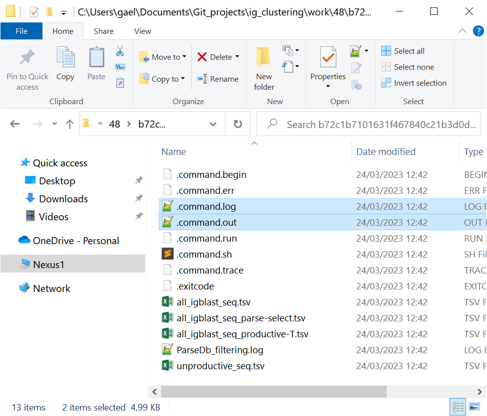
If messages are required, either assign to a log folder and use publishDir (section publishDir) or use instruction in groovy inside workflow{}:
parseDb_filtering.out.unproductive_ch.count().subscribe{
n -> if ( n == 0 ){
print "\n\nWARNING: EMPTY unproductive_seq.tsv FILE RETURNED FOLLOWING THE parseDb_filtering PROCESS\n\n"
}else{
it -> it.copyTo("${out_path}/unproductive_seq.tsv")
}
}8) The use of |& tee -a file.log prevents the arrest
of the nextflow execution and error message display. Example :
script:
"""
if [[ "${meta_file}" != "NULL" && "${meta_legend}" != "NULL" ]] ; then
Rscript -e '
df <- read.table("${file_assembly_ch}", header = TRUE, sep = "\\t")
meta <- read.table("${meta_file}", header = TRUE, sep = "\\t")
if(names(meta)[1] != "Label"){
stop(paste0("\\n\\n============\\n\\nERROR IN THE metadata_check PROCESS OF NEXTFLOW\\nIF THE meta_path PARAMETER IS NOT \\"NULL\\", THEN THE FIRST COLUMN OF THE METADATA FILE MUST BE NAMED \\"Label\\" AND BE MADE OF THE NAMES OF THE FASTA SEQUENCES\\n\\n============\\n\\n"), call. = FALSE)
}
' |& tee -a file_assembly.log
fi
"""With such script section, the error message is printed into the file_assembly.log file, but not in the console. And the process is not interrupted.
Removing |& tee -a file_assembly.log solves the
problem.
11.8.2 Script
Kind of language
Bash by default. Example of language modification
num = Channel.from(1, 2, 3)
time = Channel.from(5)
process basicExample {
input:
val num
val tempo from time.first()
script:
"""
#!/usr/bin/python3
print(\"the result is \" + str($num + $tempo))
"""
}Variable evaluation
No nextflow variable evaluation and single line -> single quote or triple single quote. Example:
'echo The path is: $PATH'
'''
echo The path is: $PATH
'''In this example PATH is not subtituted before sending the script to bash (default).
No nextflow variable evaluation and multiple lines -> triple single quote. Example:
'''
echo The path is: $PATH
echo "Hello world"
'''Nextflow variable evaluation and single line -> double quote or triple double quote. Example:
"echo The path is: $PATH"
"""
echo The path is: $PATH
"""In this example, if PATH is a nextflow variable (defined in the input section of the process, or before the process) it is substituted before sending the script to bash (default).
Nextflow variable evaluation and multiple lines -> triple double quote. Example:
"""
echo The path is: $PATH
echo \"Hello world\"
"""Here, the quotes inside the script are inactivated using
\.
Another example
"""
echo -e The path is:\\n$PATH
"""Here, the \n inside the script is inactivated using
\.
Full example
num = Channel.from(1, 2, 3)
process basicExample {
input:
val num
script:
"""
#!/usr/bin/bash
echo \"The result is \$(( $num * 5 ))\"
"""
}The shebang is used to force the execution using bash (another language can be used like this).
The $ of num is not inactivated because we
need the variable substitution before sending the code to bash. However,
the $(( has to be inactivated using \, because
it has to be interpreted only during bash execution.
Warning, some implicit variables of nextflow, like (see section 0) cannot be printed easily since it contains $ that should be inactivated.
11.8.3 Shell
Uses the exclamation mark ! character as the variable placeholder for Nextflow variables in place of the usual dollar character. Example:
process myTask {
input:
val str from 'Hello', 'Hola', 'Bonjour'
shell:
'''
echo User $USER says !{str}
'''
}!{str} replaced during evaluation, then sent to bash,
then $USER replaced.
Example:
process myTask {
input:
val str from 'Hello', 'Hola', 'Bonjour'
shell:
'''
echo User $tempo says !{str}
'''
}Bash error message because no tempo variable in the env.
Using double quotes:
process myTask {
input:
val str from 'Hello', 'Hola', 'Bonjour'
shell:
"""
echo User $tempo says !{str}
"""
}Nextflow error message because no tempo variable in nextflow.
11.8.4 Exec
To execute native codes.
See
https://www.nextflow.io/docs/latest/process.html#native-execution
https://www.nextflow.io/docs/latest/script.html#language-basics
12 Operators
12.1 Nextflow
https://www.nextflow.io/docs/latest/operator.html
12.2 Groovy
https://groovy-lang.org/operators.html
13 Closure functions
See https://www.nextflow.io/docs/latest/script.html#closures
executor {
name = 'slurm'
queueSize = 2000
}14 running
14.1 Defaults names
Nextflow recognize main.nf and nextflow.config as the two nf and config files by default.
When using nextflow run, this means that:
1) it is not mandatory to specify the config file name if it is in the same path as the main.nf file and if it is named nextflow.config. Example:
nextflow run /home/gael/tmp/main.nf2) Running from a distant repository, the two files are recognized
nextflow run https://gitlab.pasteur.fr/gmillot/project_a -r master14.2 Basic instruction for execution
14.2.1 Local running
Where the instruction is executed is important. Indeed, several files and folders are created at this place: result, work, .nexflow, etc. Once the location chosen using cd, do:
nextflow run /home/gael/tmp/main.nfThe main.nf file is executed. Parameters are in the nextflow.config file in the same folder as main.nf.
To specifiy the file name and path of the config file:
nextflow run /home/gael/tmp/main.nf -c /home/gael/tmp/nextflow.configSee section Check that a distant server is mounted if nothing happens, like:

14.2.2 Using a distant repository
See section Precision when running a distant nextflow file.
If the linkage.nf file in a public gitlab repository
Run the following command from where you want the results:
nextflow run -hub pasteur gmillot/genetic_linkage -r v1.0.0-r for the tagged version of the file.
Warning : the .config file used by default is the one present in the distant repository. The config file can be on the local computer but -c option has to be used.
If the linkage.nf file in a private gitlab repository
Create the scm file:
providers {
pasteur {
server = 'https://gitlab.pasteur.fr'
platform = 'gitlab'
}
}And save it as 'scm' in the .nextflow folder. For instance in:
\\wsl$\Ubuntu-20.04\home\gael\.nextflow
Warning: ssh key must be set for gitlab, to be able to use this procedure.
Then run the following command (example: from here \\wsl$\Ubuntu-20.04\home\gael):
nextflow run -hub pasteur gmillot/genetic_linkage -r v1.0.014.2.3 On clusters
Warning: whatever the location where the run is executed, the $HOME
(/pasteur/sonic/homes/gmillot) is the reference for
nextflow when running a file from a distant repo. This means that:
1) The scm file must be in
$HOME/.nextflow2) The .ssh key for the connection to the pasteur gitlab repo must be in
$HOME/.ssh3) When pulling the distant repo, nextflow stores it in
$HOME/.nextflow/assetsHowever, as for local running, the rest is located where the run command is executed:
1) .nextflow.log file
2) work folder
3) .nextflow folder, containing the cache folder and the history
4) singularity folder
The .nextflow/assets folder is not used.
Start with:
```{bash, eval = FALSE}
EXEC_PATH="/pasteur/zeus/projets/p01/BioIT/gmillot/project_a" # where the bin folder of the main.nf script is located
export CONF_BEFORE=/opt/gensoft/exe # on maestro
export JAVA_CONF=java/13.0.2
export JAVA_CONF_AFTER=bin/java # on maestro
export SINGU_CONF=apptainer/1.1.5
export SINGU_CONF_AFTER=bin/singularity # on maestro
export GIT_CONF=git/2.39.1
export GIT_CONF_AFTER=bin/git # on maestro
export GRAPHVIZ_CONF=graphviz/2.42.3
export GRAPHVIZ_CONF_AFTER=bin/graphviz # on maestro
MODULES="${CONF_BEFORE}/${JAVA_CONF}/${JAVA_CONF_AFTER},${CONF_BEFORE}/${SINGU_CONF}/${SINGU_CONF_AFTER},${CONF_BEFORE}/${GIT_CONF}/${GIT_CONF_AFTER},${CONF_BEFORE}/${GRAPHVIZ_CONF}/${GRAPHVIZ_CONF_AFTER}"
# cd ${EXEC_PATH} # not required when using the gitlab repo to run the script
# chmod 755 ${EXEC_PATH}/bin/*.* # not required when using the gitlab repo to run the script. Neither required if no bin folder
module load ${JAVA_CONF} ${SINGU_CONF} ${GIT_CONF} ${GRAPHVIZ_CONF}
```Then run like this:
nextflow run ${EXEC_PATH}/main.nf --modules ${MODULES}Or using a distant repo (section Precision when running a distant nextflow file):
nextflow run -hub pasteur gmillot/project_a --modules ${MODULES}Adapted code:
HOME_INI=$HOME
HOME="${ZEUSHOME}/genetic_linkage/" # $HOME changed to allow the creation of .nextflow into /$ZEUSHOME/genetic_linkage/, for instance. See NFX_HOME in the nextflow software script
trap '' SIGINT
nextflow run --modules ${MODULES} linkage.nf -c linkage.config
HOME=$HOME_INI
trap SIGINTIf an error message appears, like:
Unknown error accessing project `gmillot/project_a` -- Repository may be corrupted: /pasteur/sonic/homes/gmillot/.nextflow/assets/gmillot/project_aUse to purge the
rm -rf /pasteur/sonic/homes/gmillot/.nextflow/assets/gmillot*14.2.4 Check that a distant server is mounted
See protocol 140.
Example:
DRIVE="C"
sudo mkdir /mnt/share
sudo mount -t drvfs $DRIVE: /mnt/shareWarning: if no mounting, it is possible that nextflow does nothing, or displays a message like:
Launching `linkage.nf` [loving_morse] - revision: d5aabe528b
/mnt/share/Users14.2.5 Error messages and solutions
1)
Unknown error accessing project `gmillot/genetic_linkage` -- Repository may be corrupted: /pasteur/sonic/homes/gmillot/.nextflow/assets/gmillot/genetic_linkagePurge using:
rm -rf /pasteur/sonic/homes/gmillot/.nextflow/assets/gmillot*2)
WARN: Cannot read project manifest -- Cause: Remote resource not found: https://gitlab.pasteur.fr/api/v4/projects/gmillot%2FlinkageMake the distant repo public.
In settings/General/Visibility, project features, permissions, check that every item is "on" with "Everyone With Access" and then save the changes.
3)
permission deniedUse chmod to change the user rights.
4)
Warning: if no mounting, it is possible that nextflow does nothing, or displays a message like:
Launching `linkage.nf` [loving_morse] - revision: d5aabe528b
/mnt/share/Users14.3 Resume a run
First, get the name of the run that we want to resume, either by
opening the history file in the .nextflow folder. Example:
\\wsl$\Ubuntu-20.04\home\gael\.nextflow
Or by using the following command:
nextflow logNote: it only works when executed where a .nextflow folder is present.
Then, use the -resume option and potentially the name of the run that we want to resume. Not adding name means the last one:
nextflow run /home/gael/tmp/main.nf -resume elegant_williams
nextflow run /home/gael/tmp/main.nf -resume # the last one14.4 Precision when running a distant nextflow file
See https://www.nextflow.io/docs/latest/sharing.html#running-a-pipeline
Warning:
1) Does not work if main.nf and nextflow.config are not named like this.
2) It seems that the -r option (section The -r option) does not work if no main.nf and nextflow.config are present in the master branch. See https://github.com/nextflow-io/nextflow/issues/1591
3) When executing a distant .nf file, nextflow first pulls the repo to the .nextflow\assets\ folder, where the nextflow run command is executed. If the folder already exists, nextflow does not compare the distant repo with the local pulled one. It goes directly to the local one. Thus, if the folder is corrupted or empty, an error message will appear, even if the distant repo is ok.
See section Check that a distant server is mounted if nothing happens, like:
14.4.1 Preregistered repository
Warning: see section Precision when running a distant nextflow file.
Default command
This means that the distant repo is a public project on github/gitlab, etc., and that the two files are named main.nf and nextflow.config and are both in the pointed repo:
nextflow run gael-millot/project_aNote that gael-millot/project_a is called the "qualified
name". The qualified name is formed by two parts: the owner name and the
repository name separated by a / character
Pre-registered repo
First, precise the repo thanks to the -hub option, then the user account thanks to the -user option, then the name of the project:
nextflow run -hub github -user gael-millot project_aNote: does not work for pasteur.gitlab, as it is not referenced in nextflow. See section Private repository: example with pasteur gitlab.
Note that what is run here is the project name
project_a.
Url
Using the master branch of the public project repo:
nextflow run https://github.com/gael-millot/project_aUsing another branch/tag/commit of the project repo:
nextflow run https://github.com/gael-millot/project_a -r v1.0.0Option -r signals either a git branch, tag or commit SHA number.
14.4.2 Private repository: example with pasteur gitlab
Warning: see section Precision when running a distant nextflow file.
About the SCM file:
https://www.nextflow.io/docs/latest/sharing.html#scm-configuration-file
See the site of Remi Planel:
https://gitlab.pasteur.fr/genolist/legiolist-pre-processing/-/tree/master
Create the scm file:
providers {
pasteur {
server = 'https://gitlab.pasteur.fr'
platform = 'gitlab'
}
}And save it as 'scm' in the .nextflow folder. For instance in:
\\wsl$\Ubuntu-20.04\home\gael\.nextflow
Warning: ssh key must be set for gitlab, to be able to use this procedure (see protocol 44).
Then run the following command from here
\\wsl$\Ubuntu-20.04\home\gael:
nextflow run -hub pasteur gmillot/project_a -r v1.0.0Warning: does not work:
nextflow run -hub pasteur -user gmillot project_aSee also:
https://www.nextflow.io/blog/2021/configure-git-repositories-with-nextflow.html
14.4.3 The -r option
Branch
nextflow run -hub pasteur gmillot/project_a -r masterTag
nextflow run -hub pasteur gmillot/project_a -r v1.0.0Commit number (found in the url address bar of the commit page)
nextflow run -hub pasteur gmillot/project_a -r 1b05c85463558e8911a5ac0c2ee730b2133588c4Warning: does not work using the short ID number.
14.4.4 The -c option
It is very important to use absolute path with the -c option, since by default, nextflow uses as the starting point where the script is run. For instance, with:
nextflow run -hub pasteur gmillot/project_a -r v1.0.0 -c dev/test.configNextflow does not look starting from where main.nf is (/pasteur/appa/homes/gmillot/.nextflow/assets/gmillot/project_a/) but where the script is run (/pasteur/zeus/projets/p01/BioIT/gmillot/project_a/). Thus the best is to write:
nextflow run -hub pasteur gmillot/project_a -r v1.0.0 -c /pasteur/appa/homes/gmillot/.nextflow/assets/gmillot/project_a/dev/test.config14.4.5 Several nextflow execution
Does not work
The determinant factor is the .nextflow file: only one can be used per ongoing run. The idea is thus to create a new .nextflow folder in different tmp folders:
mkdir $ZEUSHOME/project_a/temp1
HOME="$ZEUSHOME/project_a/temp1" ;
mkdir $HOME/.nextflow ;
cp /pasteur/zeus/projets/p01/BioIT/gmillot/project_a/.nextflow/scm $HOME/.nextflow/ ;
nextflow run --modules ${MODULES} -hub pasteur gmillot/project_a -r v7.1.0 -c $HOME/.nextflow/assets/gmillot/project_a/nextflow.config ;
HOME="/pasteur/appa/homes/gmillot/"Another important thing is to execute the command where the singularity folder is present to prevent pulling docker images each time. Example of procedure for slurm:
cd $ZEUSHOME/project_a
tmuxmkdir $ZEUSHOME/project_a/temp2
HOME="$ZEUSHOME/project_a/temp2" ;
mkdir $HOME/.nextflow ;
cp /pasteur/zeus/projets/p01/BioIT/gmillot/project_a/.nextflow/scm $HOME/.nextflow/ ;
# cd $HOME/
EXEC_PATH=$HOME # where the bin folder of the main.nf script is located
export CONF_BEFORE=/opt/gensoft/exe # on maestro
export JAVA_CONF=java/13.0.2
export JAVA_CONF_AFTER=bin/java # on maestro
export SINGU_CONF=singularity/3.8.3
export SINGU_CONF_AFTER=bin/singularity # on maestro
export GIT_CONF=git/2.25.0
export GIT_CONF_AFTER=bin/git # on maestro
export GRAPHVIZ_CONF=graphviz/2.42.3
export GRAPHVIZ_CONF_AFTER=bin/graphviz # on maestro
MODULES="${CONF_BEFORE}/${JAVA_CONF}/${JAVA_CONF_AFTER},${CONF_BEFORE}/${SINGU_CONF}/${SINGU_CONF_AFTER},${CONF_BEFORE}/${GIT_CONF}/${GIT_CONF_AFTER},${CONF_BEFORE}/${GRAPHVIZ_CONF}/${GRAPHVIZ_CONF_AFTER}"
# cd ${EXEC_PATH} # not required when using the gitlab repo to run the script
# chmod 755 ${EXEC_PATH}/bin/*.* # not required when using the gitlab repo to run the script
module load ${JAVA_CONF} ${SINGU_CONF} ${GIT_CONF} ${GRAPHVIZ_CONF}
nextflow run --modules ${MODULES} -hub pasteur gmillot/project_a -r eefe412af536d368e1e6960a7acce376d769011f -c $HOME/.nextflow/assets/gmillot/project_a/nextflow.config ;
HOME="/pasteur/appa/homes/gmillot/"14.5 Example of scripts and running commands
14.5.1 Example 1
File prep:
cd
mkdir tmp
echo -e "Hello world\nI love you all" > ./tmp/ex1.txtNextflow script:
file1 = Channel.fromPath("/home/gael/tmp/ex1.txt")
process exercice1 {
input:
file tempo1 from file1
script:
"""
sed 's/ /./g' ${tempo1} > tempo2 # replace spaces by dots
"""
}Note that no need of output section
Copy paste this script into:
\\wsl$\Ubuntu-20.04\home\gael\tmp\main.nf
Execution:
nextflow run /home/gael/tmp/main.nfEverything is fine:
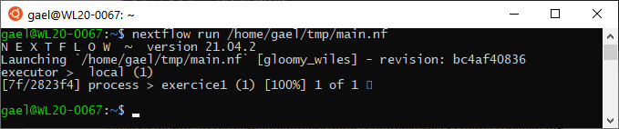
The result is in 7f as indicated in the message:
\\wsl$\Ubuntu-20.04\home\gael\work\7f\2823f4940b5ad82cd87ec4302240ea
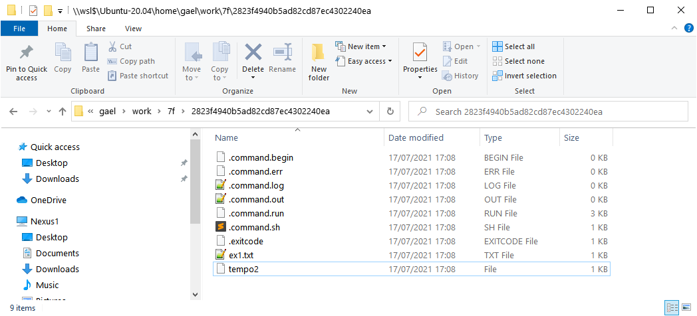
See section The work directory for the details of these files.
14.5.2 Example 2
File prep:
cd
mkdir tmp
echo -e "Hello world\nI love you all" > ./tmp/ex1.txtNextflow script:
file1 = Channel.fromPath("/home/gael/tmp/ex1.txt")
process exercice1 {
input:
file tempo1 from file1
output:
script:
"""
sed 's/ /./g' ${tempo1} > tempo2 # replace spaces by dots
"""
}Copy paste this script into:
\\wsl$\Ubuntu-20.04\home\gael\tmp\main2.nf
Execution:
nextflow run /home/gael/tmp/main.nf14.5.3 Example 3
See
C:\Users\gael\Documents\Git_projects\project_a
nextflow run -resume -hub pasteur gmillot/project_a -r v1.0.014.5.4 Example 4
See
C:\Users\gael\Documents\Git_projects\project_a
nextflow run https://gitlab.pasteur.fr/gmillot/project_a/-/blob/v1.0.0/main.nf -resume15 Execution printing
15.1 Display
N E X T F L O W ~ version 19.04.0
executor > local (3)[69/c8ea4a] process > splitLetters [100%] 1 of 1
✔
[84/c8b7f1] process > convertToUpper [100%] 2 of 2
✔
You can see that the first process is executed once, and the second twice. Finally the result string is printed.
The hexadecimal numbers, like 22/7548fa, identify the unique process execution. These numbers are also the prefix of the directories where each process is executed. You can inspect the files produced by them changing to the directory $PWD/work and using these numbers to find the process-specific execution path.
15.2 Recovering these infos
See trace in section Parameter and execution report and section The work directory.
16 Config file
https://www.nextflow.io/docs/latest/config.html#configuration-file
https://carpentries-incubator.github.io/workflows-nextflow/08-configuration/index.html
16.1 Name and location of the config file
By default:
nextflow.config
in the same folder as the main.nf file.
16.2 Priorities of variables
https://www.nextflow.io/docs/latest/config.html?highlight=params#configuration-file
When a pipeline script is launched, Nextflow looks for configuration files in multiple locations. Since each configuration file can contain conflicting settings, the sources are ranked to decide which settings to are applied. All possible configuration sources are reported below, listed in order of priority:
Parameters specified on the command line (--something value)
Parameters provided using the -params-file option
Config file specified using the -C my_config option
The config file named nextflow.config in the current directory
The config file named nextflow.config in the workflow project directory
The config file $HOME/.nextflow/config
Values defined within the pipeline script itself (e.g. main.nf)
When more than one of these ways of specifying configurations are used, they are merged, so that the settings in the first override the same ones that may appear in the second one, and so on.
If you want to ignore any default configuration files and use only the custom one use the command line option -C <config file>.
Three main sections inside a config file: variables, scopes and directives
16.3 Variables
Variables can be defined at the begining of the config file
1) variables that will be used in the main.nf file.
2) variables that will be used only in the config file.
16.4 Scopes
The following sections cannot be used in nextflow scripts, only in config files.
16.4.1 env
This scope allows to declare variables that will be used in the main executed nf file.
See an example of how to write variables in env:
https://gitlab.pasteur.fr/gmillot/project_a/-/tree/v1.0.0
16.4.2 executor
https://www.nextflow.io/docs/latest/config.html#scope-executor
16.4.3 singularity
https://www.nextflow.io/docs/latest/config.html#scope-singularity
To understand how singularity is used by nextflow instead of docker :
https://www.nextflow.io/docs/latest/singularity.html#singularity-page
See notably https://www.nextflow.io/docs/latest/singularity.html#singularity-docker-hub
Warning: python can have problems with singularity. The error message is:
FileNotFoundError: [Errno 2] No such file or directory: '/dev/shm'
In that case, use:
singularity {
runOptions = '-B /run/shm:/run/shm'
}Example:
singularity {
enabled = true
autoMounts = true // automatically mounts host paths in the executed container
runOptions = '--no-home --bind /pasteur -B /run/shm:/run/shm'
cacheDir = '/pasteur/zeus/projets/p01/BioIT/gmillot/project_a/singularity'
}Single or double quotes depending on whether we need variable interpretation or not.
Warning: with apptainer, this trick does not work.
Options of singularity:
| enabled | Turn this flag to true to enable Singularity execution (default: false). |
| autoMounts | When true Nextflow automatically mounts host paths in the executed container. It requires the user bind control feature enabled in your Singularity installation (default: false). |
| runOptions | This attribute can be used to provide any extra command line options supported by the singularity exec. |
--bind mount a folder point into the container. Mandatory such that singularity is able to understand the tree of the machine used. Example: --bind /pasteur, in order for singularity to access to /pasteur/usr/local for instance. By default, singularity uses --bind $HOME --no-home does not use $HOME (which is what is used by default). Probably create a tmp folder or an empty $HOME. This prevent singularity to use $HOME to look for applications and forces it to use only what is inside the container --home $HOME:/home/$USER to change the $HOME for singularity
cacheDir The directory where remote Singularity images are stored. When using a computing cluster it must be a shared folder accessible to all computing nodes.
In singularity, there is no entrypoint to manage.
Remember that Nextflow use singularity exec and not singularity run (see protocol ).
16.4.4 Docker
If singularity/apptainer is not available locally (on MacOS for instance), use:
docker{
enabled = true
runOptions = "--entrypoint ''"
}runOptions This attribute can be used to provide any extra command line options supported by the docker exec.
--entrypoint "" Overwrite the default entrypoint set by the image of the container, so that it uses the system (bash for instance).
https://www.nextflow.io/docs/latest/config.html#scope-docker
16.4.5 process
https://www.nextflow.io/docs/latest/config.html#scope-process
17 Info about the run
17.1 Run metadata
https://www.nextflow.io/docs/latest/metadata.html#workflow-introspection
The workflow object contains many info about the run
that are listed in the link above. To get them, use for instance:
println "Project : $workflow.projectDir"
println "Git info: $workflow.repository - $workflow.revision [$workflow.commitId]"
println "Cmd line: $workflow.commandLine"
println "configFiles: $workflow.configFiles"
println "configFiles: $workflow.configFiles[0]"
config_file = workflow.configFiles[0] // to get the config file (as a file, not a path string)17.2 Parameter and execution report
https://www.nextflow.io/docs/latest/config.html#config-scopes
Several scopes are interesting:
| report | https://www.nextflow.io/docs/latest/config.html#scope-report |
| trace | provide information about each process execution, including the path in the work directory where to find all the execution report files. Somehow, similar to the printing during nextflow execution. See section The work directory. |
| timeline | time line of each process |
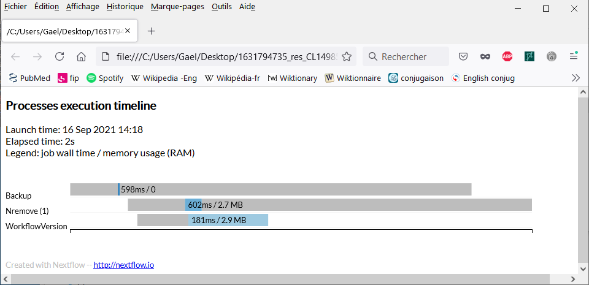
dag graph in the dot format of the workflow. Graphviz software (https://graphviz.org/download/) is required to see the graph. For formats other than dot, see https://www.nextflow.io/docs/latest/tracing.html#dag-visualisation. To install graphviz: http://www.graphviz.org/download/
sudo apt install graphvizParameters of the report scope:
https://www.nextflow.io/docs/latest/config.html#config-report
17.3 The work directory
During each worflow execution, a working directory is created in the work directory for each process. The full path is indicated in the trace file (section Parameter and execution report). Example of trace content:
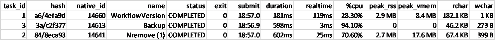
Example of the content of the corresponding task 2:
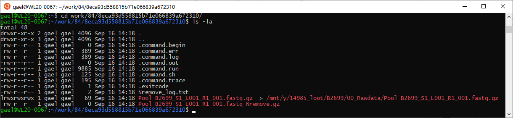
The tmp file contains all the files indicated in the input and output blocks of the process (see that the Pool-B2699_S1_L001_R1_001.fastq.gz file is a symbolic link), and also the following files:
.command.begin
| .command.err | content of STDERR |
| .command.log | STDOUT + STDERR |
| .command.out | content of STDOUT |
| .command.run | Nextflow generated commands torun the script (cloud, etc.) |
| .command.sh | Script of the task ("script:" in process definition). Warning : the files indicated are not with absolute path because it is the file from the work tmp directory that is called (see section The work directory) |
| .command.trace | Memory/CPU/Disk footprint of the task |
| .exitcode | Exit status of the task (0, ok; other, error) |
17.4 Manifest
https://www.nextflow.io/docs/latest/metadata.html?highlight=workflow%20manifest%20version
18 Problem of path
It is difficult to work with absolute paths with nextflow, because the idea of nextflow is precisely to do not depend on that (see section Very important to understand) by creating the work tmp directory (see section The work directory).
Example of how path can be used :
process check {
label 'bash' // see the withLabel: bash in the nextflow config file
publishDir "${out_path}", mode: 'copy', overwrite: false
cache 'false'
input:
val projectDir
val out_path
output:
file "check_log.txt"
script:
"""
check.sh "check_log.txt" ${projectDir} ${out_path}
"""
}With the following check.sh script file
output_file=$1
in_path="$2"
out_path="$3"
echo -e "\nRESULT DIRECTORY CREATED:\n${out_path}\n" > ${output_file}
echo -e "\nnextflow.config FILE USED FOR THIS RUN IS IN:\n${in_path}\nAND IS SAVED IN:\n${out_path}\n" >> ${output_file}Here we can see that the text is printed in the
${output_file}, which corresponds to
"check_log.txt" , that is created in the tmp work directory
when the process is executed. With
publishDir "${out_path}", mode: 'copy', the
"check_log.txt" file is also copied in the result folder.
The other arguments are just indicative. They are not used as path.
19 Example of variable assessment
19.1 Warning with "!"
This works:
nb = "a"
if(nb != "a"){
error "\nERROR\n"
}This assessment of nb being a character string made of digits does not work properly :
nb = "a"
if( ! nb =~ /^\d+$/){
error "\nERROR\n"
}Neither this:
nb = "a"
if(nb !=~ /^\d+$/){
error "\nERROR\n"
}But this yes:
nb = "a"
if( ! (nb =~ /^\d+$/) ){
error "\nERROR\n"
}Idem with expression like this one that does not work properly:
nb = 1
if( ! nb in String){
error "\nERROR\n"
}But this yes:
nb = 1
if( ! (nb in String) ){
error "\nERROR\n"
}Thus, always use brackets with "!"
19.2 Warning with "|"
This assessment of nb being a proportion character string (0 or 1 or 0.<digits>) does not work properly :
nb = "1.1"
if(nb =~ /^(1)|(0)|(0\.[0-9]*)$/){
println("\nOK\n")
}else{
error "\nERROR\n"
}But this works:
nb = "1.1"
if(nb =~ /^((1)|(0)|(0\.[0-9]*))$/){
println("\nOK\n")
}else{
error "\nERROR\n"
}Thus, always use brackets with "|"
19.3 String made of integer over 2
nb="1"
try {
if(nb.toInteger()<3){
throw new Exception("Integer not >=3")
}else{
println("Entier > 3")
}
} catch(Exception e) {
println "Problem with nb parameter: "+e.message
}or
nb="1"
if(( ! (nb =~ /^\d+$/)) || nb.toInteger() < 3){
error "\n\n========\n\nERROR IN NEXTFLOW EXECUTION\n\nINVALID nb PARAMETER IN ig_clustering.config FILE:\n${nb}\nMUST BE A POSITIVE INTEGER VALUE EQUAL OR GREATER TO 3\n\n========\n\n"
}20 Example of processes
20.1 Versions & used variables
git_path="https://gitlab.pasteur.fr/gmillot/project_a/-/raw/master"
in_path="/mnt/y/project_a/B2699/00_Rawdata"
config_file = workflow.configFiles[0] // better to use this than config_file = file("${projectDir}/ig_clustering.config") because the latter is not good if -c option of nextflow run is used
result_folder_name="20210903_res_project_a"
out_path="/mnt/c/Users/Gael/Desktop"
out_path="${out_path}/${result_folder_name}"
process WorkflowVersion {
publishDir "${out_path}", mode: 'copy'
cache 'false'
executor 'local' // this is the default config
output:
file "Run_info.txt"
script:
"""
echo "Project: " \$(git -C ${projectDir} remote -v | head -n 1) > Run_info.txt # works only if the main script run is located in a directory that has a .git folder, i.e., that is connected to a distant repo
echo "Git info: " \$(git -C ${projectDir} describe --abbrev=10 --dirty --always --tags) >> Run_info.txt # idem. Provide the small commit number of the script and nextflow.config used in the execution
echo "Cmd line: ${workflow.commandLine}" >> Run_info.txt // provide the command line used
echo "Manifest's pipeline version: ${workflow.manifest.version}" >> Run_info.txt
echo "result path: ${out_path}" >> Run_info.txt
echo "nextflow version: ${nextflow.version}" >> Run_info.txt
echo -e "\\n\\nIMPLICIT VARIABLES:\\n\\nlaunchDir (directory where the workflow is run): ${launchDir}\\nprojectDir (directory where the main script is located): ${projectDir}\\nworkDir (directory where tasks temporary files are created): ${workDir}" >> Run_info.txt
echo -e "\\n\\nSCRIPT VARIABLES:\\n\\ngit_path: ${git_path}\\nin_path: ${in_path}\\nout_path: ${out_path}" >> Run_info.txt
"""
}The two first lines are very important in reproductibility, as they connect the executed script with the commited version to a distant repo. But it works only if the the main script run is located in a directory that has a .git folder, i.e., that is connected to a distant repo.
To recover the url of the commit number indicated in "Git info:"
git20.2 Backup the nextflow.config file into the result folder
A nextflow.config file must exist where the main.nf file is executed.
config_file = workflow.configFiles[0] // better to use this than config_file = file("${projectDir}/ig_clustering.config") because the latter is not good if -c option of nextflow run is used
result_folder_name="20210903_res_project_a"
out_path="/mnt/c/Users/Gael/Desktop"
out_path="${out_path}/${result_folder_name}"
process configBackup {
label 'bash' // see the withLabel: bash in the nextflow config file
publishDir "${out_path}", mode: 'copy', overwrite: false // since I am in mode copy, all the output files will be copied into the publishDir. See \\wsl$\Ubuntu-20.04\home\gael\work\aa\a0e9a739acae026fb205bc3fc21f9b
cache 'false'
input:
file config_file
output:
file "${config_file}" // warning message if we use file config_file
script:
"""
"""
}20.3 Library of processes
https://github.com/nextflow-io/patterns/
21 Nextflow nf-core
Community effort to collect a curated set of analysis pipelines built using Nextflow. It is like to make packages for nextflow in order to avoid to each one to develop the same stuff (like bowtie alignment). The problem is that the code beomes very hard to understand because many sub files, etc. Fred Lemoine does not use it.
https://github.com/nf-core/configs
https://github.com/nf-core/hic
https://github.com/nf-core/sarek
Command:
singularity pull --docker-login docker://nfcore/hic
nextflow run nf-core/hic -r 1.2.2 -profile singularity --input 'SRR11893084_{1,2}.fastq' --fasta ../fa/scer_288_2mu.fa --bwt2_idx ../fa/scer_288_2mu --dnase --bin-size '
200,1000' -c ~/pasteur.config -with-singularity ../hic_latest.sif22 Errors handling
For the list of error exit status, sse the corresponding environnement (slurm for instance).
23 Troubleshootings
1) How to run nextflow on maestro and be able to quit the session without killing the process ?
Use Tmux (see protocol )
2) How to run the same nextflow on two independent sessions. It seems that there is a problem inside the .nexflow folder.
scope singularity avec cachedir ou NXF_SINGULARITY_CACHEDIR defined in the .profile
This force with an absolute path where nextflow has to seek for singularity images. scope singularity with cachedir overrides the NXF_SINGULARITY_CACHEDIR variable
3) The variable problem that I still have to deal with Fred in nf_column_reorder
4) The problem with subscribe that I still have to deal with Fred in nf_column_reorder
5) Dockerfile : I suceeded to recover the log of the building process (see r extended dockerfile v1.0). But how to recover all the prints? Some are missing, notably during compilation of R packages
6) In docker, is it important to force the versions to install, in order to have a better chance to recreate the same image from the dockerfile, if ever the image is lost ?
7) How to use docker instead of singularity
J'ai un truc bizarre. Quand je remplace mon engin singularity:
singularity {
enabled = true
autoMounts = true
cacheDir = 'singularity'
}
par
docker {
enabled = true
}
J'ai le message d'erreur suivant:
Cannot enable more than one container engine -- Choose either one of: docker, singularity
Alors que je n'ai aboslument plus de mot 'singularity' dans le config ou le main file.
Salut Gael, peut être sur la ligne de commande?
8) Why cache = TRUE is sometimes not respected? Why -resume is not respected ?
https://github.com/nextflow-io/nextflow/issues/1629
As soon as a cache = false in a process, all the process that uses a channel from this process will be re-executed. This is the case for
Warning: Rscript $workflow.projectDir/bin/plot_fivep_filtering_stat.R is the only way to have the execution rights of a .R file in the bin directory when the gitlab repo is pulled into /pasteur/sonic/homes/gmillot/.nextflow/assets/. See https://github.com/nextflow-io/nextflow/issues/698. Otherwise, the following message can appear: Fatal error: cannot open file '/pasteur/sonic/homes/gmillot/.nextflow/assets/gmillot/project_a/bin/plot_fivep_filtering.R': No such file or directory
But we have added a Rscript shebang at the beginning of each .R file. This could overcome the problem.
9) I would like the dag file in png and html at the same time.
No idea.
10) How to increment a channel name. Example: log_ch{NB+1}
Nope. No way
11) How to have two channels made of several files in the same order. Example. I want to be sure that these two series are associated in the same order:
file bam from bowtie2_ch2.concat(q20_ch3, dup_ch1) // warning: several files
file read_nb from bow_read_nb_ch.concat(q20_read_nb_ch, dup_read_nb_ch)
tuple file(bam), file(readnb) from bowtie2_ch2.combine(bow_read.nb_ch).concat(q20-ch3.combine(q20_read_nb_ch)).concat(dup_ch1.combine(dup_read_nb_ch))combine() creates a list and concat() creates a channel
12) A way to parallelize alientrimmer ?
trimgalore
13) Quand je définie ces deux listes:
categ = ["leading0", "leading16", "lagging0", "lagging16"]
grep_pattern = ["LEADING_0", "LEADING_16", "LAGGING_0", "LAGGING_16"]
Comment assembler les éléments deux à deux dans l'input de sorte que 4 parallélization du process ?
tuple val("categ"), val("grep_pattern") from categ.phase(grep_pattern) ne fonctionne pas par exemple.
tuple val(grep_pattern), val(cat) from grep_pattern.merge(categ)
Ou
categ = Channel.from(["leading0", "LEADING_0"], ["leading16", "LEADING_16"], …)
Et tu l’utilises directement:
Input:
tuple val(categ), val(grep) from categ
14) Warning: everything written outside of processes and that is not channel, will not be detected if modified when -resume is used. Thus, it is very dangerous to use such way of writting in nextflow scripts. In other words, only variable that will never change can be written outside of channels. Example of mistake with the incrementation of figure numbers:
figure_count = 0 # new variable defined at the beginning of a script
process plot_fivep_filtering_stat {
label 'r_ext' // see the withLabel: bash in the nextflow config file
input:
val cute_path
output:
script:
"""
echo -e "
{width=600}
\\n\\n</center>\\n\\n
" > report.rmd
plot_fivep_filtering_stat.R "${stat}" "${attc_seq}" "${cute_path}" "plot_fivep_filtering_stat_report.txt"
"""
}
figure_count = figure_count + 1This works as long as -resume is not used. Otherwise, if this process is not used, the incrementation below the process is executed but the variable is not detected as modified by the processes downstream, even is "val figure_count" is added in the input block of downstream processes.
15) Can I hard delete a file that went into a channel once I do not need it anymore to save space in the work dir (to avoid crash due to lack of space) ?
Not yet possible, and hard to implement due to the structure of nextflow. Can be done with snakemake.
https://github.com/nextflow-io/nextflow/issues/452
16) If a cache does not work as expected when using the -resume option of nextflow run
In the process that is not using the cache, check if an output file name has the same name than an input file name. If yes, that will explain the problem.
17) Warning this the file names
In each process, never use an output file name identical to an input file name. Otherwise :
1- see above the problem of cache
2- an input fiel can be directly sent into a output channel. Example:
input:
file pos from orient_ch1 // with the name test.pos
output:
file "${pos.baseName}_.pos" into pos_ch1 // the test.pos is sent into the pos_ch1 channel
This example is not a good practice because it either mean that an input file has been modified in a process without name change or because a file has been directly sent into a channel without processing (it is better to stay in a channel in taht case)
23.1 Slow parallelization in WSL2
See protocol 140 to set the .wslconfig file.
23.2 How to deal with replacement in awk
In the line highlighted in yellow is an example of how to replace square brackets or single quote, written in a process.
script:
"""
#!/bin/bash -ue
PREHEADER='##fileformat=VCFv4.1;build by fisher_for_vcf.nf'
HEADER='#CHROM\\tPOS\\tID\\tREF\\tALT\\tQUAL\\tFILTER\\tINFO'
echo -e \$PREHEADER > res.vcf
awk -v var1=\$HEADER 'BEGIN{FS="\\t" ; OFS="" ; ORS=""}
NR==1{
print "##WARNING: 4 first names of the header of the initial file:"\$1" "\$2" "\$3" "\$4"\\n" ;
print "##WARNING: if the four first columns of the .tsv file are not CHROM POS REF ALT, then the .vcf file produced by this process is not good\\n" ;
print "##FORMAT=<FISHER=" ;
for(i=5;i<=NF;i++){print \$i ; if(i < NF){print "|"}} ;
print ">\\n" ;
print var1"\\n"
}
NR > 1{
gsub("[\\\\[\\\\]\\'"'"']", "", \$4)
print \$1"\\t"\$2"\\t.\\t"\$3"\\t"\$4"\\t.\\t.\\tFISHER=" ;
for(i=5;i<=NF;i++){print \$i ; if(i < NF){print "|"}} ;
print "\\n"
}
' ${fisher} >> res.vcf
"""23.3 Weird message (with process run but no output)
Example:
WARNING: '-e ~n~~+~~+~~+~~+~tempo.list~+~<-~+~list.files(path~+~=~+~".",~+~pattern~+~Solution:
The script section is too long. Use a separate script file in the bin directory and call this file from the script section.
23.4 '\r': command not found
Example:
Command error:
/mnt/c/Users/Gael/Documents/Git_projects/ig_clustering/bin/tree_vizu.R: line 1: $'\r': command not foundSolution:
Open the script file using notepad+ and remove all the CR (\r).
23.5 weird behavior of collectFile()
The case happens when using an output channel of a process that gathers several files without parallelization. In such situation, the channel is a list. Example with ig_clustering in https://gitlab.pasteur.fr/gmillot/ig_clustering:
tree_vizu.out.tree_seq_not_displayed_ch.view()
[/pasteur/zeus/projets/p01/BioIT/gmillot/Alice/sort1_VH/ig_clustering-v6.11/work/d5/d2f7b2ed8656ca0f671685bbd44079/16_tree_seq_not_displayed.tsv, /pasteur/zeus/projets/p01/BioIT/gmillot/Alice/sort1_VH/ig_clustering-v6.11/work/d5/d2f7b2ed8656ca0f671685bbd44079/17_tree_seq_not_displayed.tsv, /pasteur/zeus/projets/p01/BioIT/gmillot/Alice/sort1_VH/ig_clustering-v6.11/work/d5/d2f7b2ed8656ca0f671685bbd44079/18_tree_seq_not_displayed.tsv]If collectFile() is used that way:
tree_seq_not_displayed_ch2 = tree_vizu.out.tree_seq_not_displayed_ch.collectFile(name: "tree_seq_not_displayed.tsv", skip: 1, keepHeader: true)
tree_seq_not_displayed_ch2.subscribe{it -> it.copyTo("${out_path}")}Then, it seems that nextflow takes the first file of the list,
16_tree_seq_not_displayed.tsv, in the work directory of the
tree_vizu process and combine the 2 other
17_tree_seq_not_displayed.tsv and
18_tree_seq_not_displayed.tsv files into that file, but
with missing the content of 16_tree_seq_not_displayed.tsv.
And even if the name of the output file
collectFile(name: "tree_seq_not_displayed.tsv") is imposed,
it is 16_tree_seq_not_displayed.tsv that is returned by
tree_seq_not_displayed_ch2.subscribe{it -> it.copyTo("${out_path}")}.
The flatten command, by splitting the list into several objects:
tree_vizu.out.tree_seq_not_displayed_ch.flatten().view()
/pasteur/zeus/projets/p01/BioIT/gmillot/Alice/sort1_VH/ig_clustering-v6.11/work/8c/f4c93891cd4729cd8a85bf09351512/16_tree_seq_not_displayed.tsv
/pasteur/zeus/projets/p01/BioIT/gmillot/Alice/sort1_VH/ig_clustering-v6.11/work/8c/f4c93891cd4729cd8a85bf09351512/17_tree_seq_not_displayed.tsv
/pasteur/zeus/projets/p01/BioIT/gmillot/Alice/sort1_VH/ig_clustering-v6.11/work/8c/f4c93891cd4729cd8a85bf09351512/18_tree_seq_not_displayed.tsv
/pasteur/zeus/projets/p01/BioIT/gmillot/Alice/sort1_VH/ig_clustering-v6.11/work/tmp/67/3102181f3bb7419150a18c379fc3e9/tree_seq_not_displayed.tsvSolve this:
tree_seq_not_displayed_ch2 = tree_vizu.out.tree_seq_not_displayed_ch.flatten().collectFile(name: "tree_seq_not_displayed.tsv", skip: 1, keepHeader: true)
tree_seq_not_displayed_ch2.subscribe{it -> it.copyTo("${out_path}")}